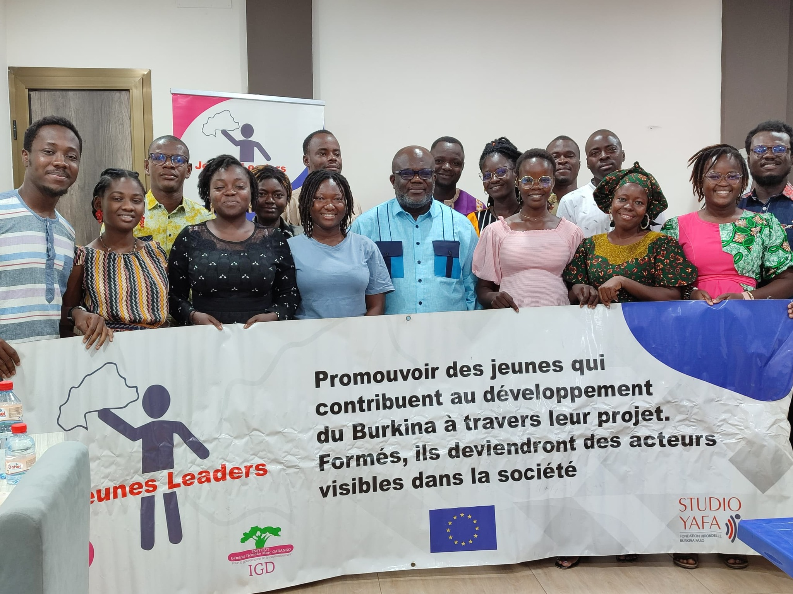

Actualités récentes

Session de formation WYDE à Abidjan
Une trentaine de jeunes et de femmes venus de Côte d’Ivoire et du Sénégal ont participé à la session de formation WYDE.
Lire plus
Jeunes leaders
Première session de formation de la troisième cohorte du projet "Jeunes Leaders".
Lire plus
Citoyen FEMIN-IN
Cérémonie de clôture et lancement de la cohorte 2025 de l’Incubateur Politique Citoyen FEMIN-IN.
Lire plus